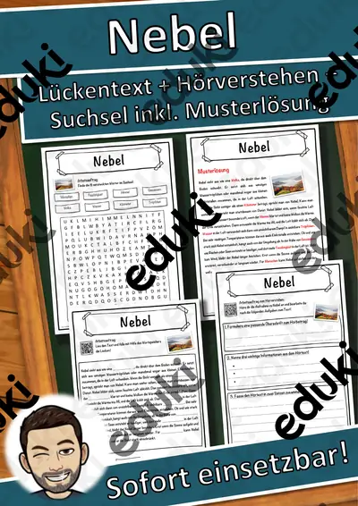

Die Nebelwiese – Lesespurgeschichte mit Rätselaufgaben (Klasse 3)
Begib dich mit deiner Klasse auf eine spannende Lesespur über eine neblige Herbstwiese! Emma geht an einem kühlen Morgen mit ihrem Hund Fips hinaus ins nasse Gras und erkundet die Wiese – vom Gartentor über den Wiesenpfad, das Spinnennetz, den Grashalm, den Weidezaun, den Tümpel, den Weidenbaum und den Sonnenhügel bis zur Aussichtsbank. Ganz nebenbei entdecken die Kinder, woher der Tau am Morgen kommt, warum Nebel entsteht und warum die Wiese am Mittag wieder trocken ist. Am Ende jedes Abschnitts verrät ein Hinweis den nächsten Ort auf dem Wiesen-Plan – nur wer richtig liest und mitdenkt, findet den Weg und sammelt alle geheimen Buchstaben zum Lösungswort.
Die perfekte Lesespur für den HERBST: Sie verbindet motivierendes, sinnentnehmendes Lesen mit echtem Sachwissen über Wasser und Wetter und schult zugleich das genaue Arbeiten. Das Material ist SOFORT EINSETZBAR und in DREI DIFFERENZIERUNGSSTUFEN (leicht ★ / mittel ★★ / schwer ★★★) angelegt, sodass alle Kinder einer Klasse am selben Thema arbeiten können.WICHTIG: Das komplette Material ist sowohl in FARBE als auch in SCHWARZ-WEISS enthalten – ideal zum Sparen von Druckkosten.DAS IST ENTHALTEN
- Lesespurgeschichte in 3 Niveaus (leicht, mittel, schwer)
- farbiger Wiesen-Plan als Suchkarte
- Hörverstehen mit QR-Code zur MP3 (Kinder hören selbstständig mit Kopfhörern)
- vier Aufträge auf dem Weg: ein Verbinde-Rätsel, ein Tau-Quiz, eine Rechenaufgabe und ein Steckbrief
- Rätselseite (Wörter-Suchsel + Wissensfragen)
- Ausmalbild zum Thema
- ausführliches Lösungsblatt für die Lehrkraft
- alles zusätzlich als komplette Schwarz-Weiß-VarianteSO FUNKTIONIERT DIE LESESPURDie Kinder lesen ab START, entnehmen dem Text einen Hinweis auf einen Ort auf der Wiese, suchen ihn auf dem Plan und lesen bei dieser Station weiter. An jeder richtigen Station gibt es einen Sammelbuchstaben. Eingebaute Sackgassen (Komposthaufen, Holzstapel, Sandkasten, Blumenbeet) dienen der Selbstkontrolle und machen deutlich, dass diese zwar zum Garten am Rand gehören, aber nicht zum Morgenspaziergang über die Wiese. Am Ende werden die gesammelten Buchstaben umgestellt und ergeben ein geheimes Lösungswort. (Die Lösungen sind selbstverständlich nur im Lösungsblatt für die Lehrkraft enthalten.)INHALTLICHER SCHWERPUNKTWie Tau und Nebel entstehen: dass in der Luft immer unsichtbares Wasser steckt und warme Luft mehr davon halten kann als kalte, warum sich das Wasser nachts als winzige Tropfen auf Gras, Spinnennetzen und Zäunen absetzt, dass sich der Tau besonders an Flächen bildet, die schneller auskühlen als die Luft darüber, wodurch sich Tau und Nebel unterscheiden (beim Nebel schweben die Tröpfchen frei in der Luft), und warum die Morgensonne den Tau wieder verdunsten lässt. Das Material stellt die Zusammenhänge sachlich und kindgerecht dar und lädt zum eigenen Beobachten am Schulweg ein.ABGEDECKTER LEHRPLAN (Klasse 3-4)
- Sachunterricht – Naturphänomene, Wasser und Wetter: die Formen des Wassers, Wasser in der Luft, Verdunsten und Kondensieren einfach erklärt, Wetterbeobachtung, genaues Beobachten in der Natur.
- Deutsch – Lesen mit Texten und Medien umgehen: Lesestrategien anwenden, Texten gezielt Informationen entnehmen, sinnentnehmend und selektiv lesen; Selbstkontrolle und Lesemotivation durch die Lesespur; Zuhören: einem Sachhörtext konzentriert folgen (Hörverstehen mit MP3).
- Mathematik – Rechnen im Sachzusammenhang (Zahlen rund um Tau und Wiese).
- Fächerübergreifend / Kompetenzen: naturwissenschaftliches Verständnis, genaues Beobachten und Vergleichen, selbstständiges Arbeiten, Konzentration und Ausdauer, kreatives Gestalten (Ausmalbild).
Geeignet für Freiarbeit, Stationenlernen, Vertretungsstunden, Wochenplan und Homeschooling – besonders passend zur Jahreszeit HERBST. Klassenstufe 3-4 (differenziert einsetzbar auch in angrenzenden Jahrgangsstufen).
Ähnliche Materialien

Halloween – woher das Fest kommt und wie man es in Irland feiert – Lesespurgeschichte mit Rätselaufgaben (Klasse 3)

Woher kommt mein Spielzeug – die Weltreise eines Spielzeugautos – Lesespurgeschichte mit Rätselaufgaben (Klasse 8)

Gras Lückentext mit Wortspeicher Hörverstehen und Suchsel

Der Nebel – Lesespurgeschichte mit Rätselaufgaben (Klasse 8)

Nebel Lückentext mit Wortspeicher Hörverstehen und Suchsel

Wiese Lückentext mit Wortspeicher Hörverstehen und Suchsel

Der Hund – ein treues Haustier – Lesespurgeschichte mit Rätselaufgaben (Klasse 5)